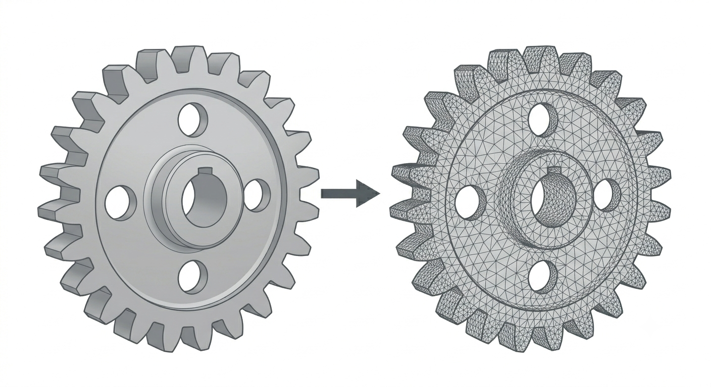
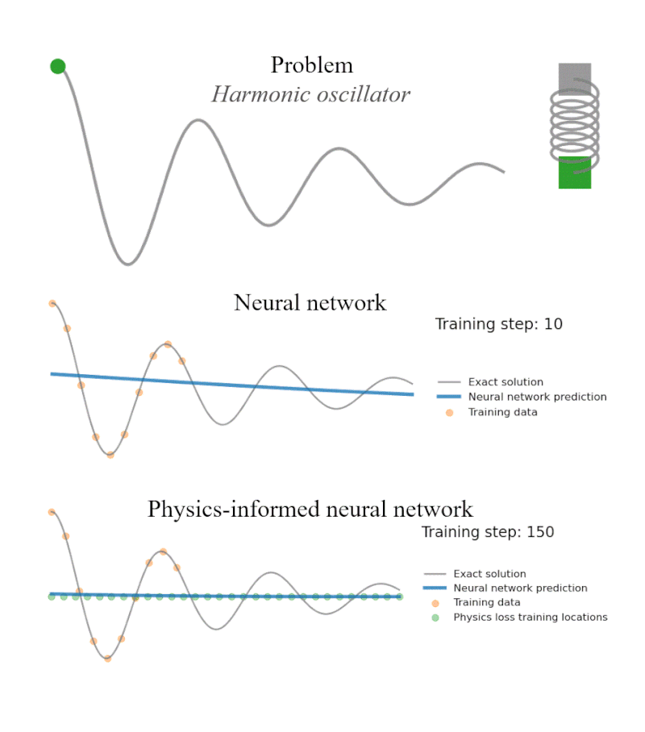
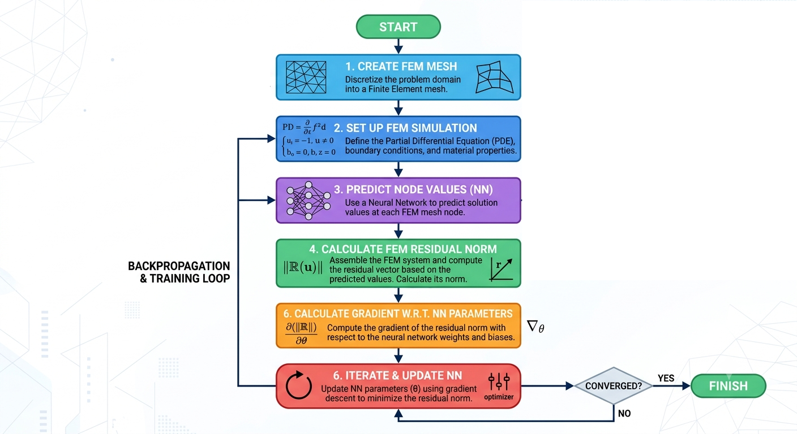

Using machine learning to enhance the finite element method
This post gives a non-technical overview of what FEM is, why we would use FEM, and how machine learning methds are being used to complement PDE solution methods
What is finite element analysis?
If you knocked your coffee cup off your desk right now, you know the direction it will fall the moment your hand makes contact. This is because it is a mechanistic phenomenon–it is responding to the force of gravity exerted by the earth. Physics is the study of the mechanisms underpinning phenomena like this one, and all physical phenomena (heat transfer through matter, the flow of fluids, crack formation) are governed by mechanistic rules and relationships.
The true mechanistic relationship is unknowable, of course–there's no "Introduction to that thing: but only for people who already know it" lying around with the laws of the universe written out for all to use. The only way we can get at these is by observing relationships and describing what we see. We most often describe these rules and relationships in the language of mathematics, and maybe the most prominent descriptive tool are partial differential equations–equations involving both a multivariable function and its derivatives. A platonic example of this class of equation is Laplace's equation:
\begin{equation} \frac{\partial^2 u}{\partial x^2} (x,y) + \frac{\partial^2 u}{\partial y^2} (x,y) = 0 \end{equation}
The equilibrium temperature distribution in a sheet of matter is governed by this equation. One problem should jump out at you though–if $u(x,y)$ describes the heat across the serfice of a metal sheet, this equation must hold at any point within the sheet, at an uncountable number of points. This is an uncountable number of constraints–how can we find a function $u(x,y)$ that satisfies this?
Well, turns out that while this equation must hold true for an infinite number of points (on every infinitesimally small piece of the domain) it's often enough to break the domain into a finite number of pieces and force the relationship to hold in the aggregate for each piece. This idea underlies several methods you've probably heard of–the finite difference method (FDM), the finite volume method (FVM), and the finite element method (FEM).
Finite element analysis underlies the method that is the focus of this discussion. Briefly, the domain of analysis is split up into a finite number of elements (thus the name), and the equation describing the relationship is translated into a "weak form," that's mostly equivalent but places fewer requirements on the smoothness and differentiability of $u(x,y)$. To solve this, we model $u(x,y)$ with a function $U(x,y)$ that is a linear combination of a finite number of pre-selected nodes within the domain (often the corners of the element that the point falls within), plug it into our weak form, and minimize the residual of that equation using an appropriate optimization method.

Can AI play a role in these types of problems?
This, at its core, seems like a machine learning problem. We want to optimize the parameters of a function approximator ($U(x,y)$) to minimize the prediction error over a dataset (the deviation from the physical law we're enforcing in the domain). Scientific computing and machine learning are two areas that often speak different languages–while the first neural networks came out of Cornell Aueronautics Lab, I don't know if most engineers would describe FEM as machine learning.
However, this doesn't mean machine learning has nothing to add. Neural networks, which are not just a function approximator, but a universal function approximator, have revolutionized vision, language, robotics, and many other applications. It's a natural evolution to apply them to problems in physical sciences.
Traditional ML model fitting isn't enough, though–if you set up a simple MLP, and try to train it to learn a physics problem through pure data fitting (via MSE or MAE or some other metric) the predictions the model produces can violate the physical laws that underpin the system. Leaving these out also leaves information on the table, the same as deleting half of your training data would. To leverage ML in physical simulation workflows, we need to leverage specialized methods.
PINNs and FEINNs
The overarching family of methods that has resulted is the "physics informed neural network" (PINN) which adds a penalized compnent to the loss reflecting the divergence from the physical law we want to enforce.
\begin{equation} l (y, \hat{y}) = l{data} (y, \hat{y}) + \lambda l{physics} (y, \hat{y}) \end{equation}
Here's a visualization showing the difference:

These have seen some success, but have a major drawback–they don't enforce "boundary conditions" well. Boundary conditions pin down the solutions of PDE to something tangible–if we're studying the bending of a beam, knowing it is fixed to a wall at one end is critical to understanding how far it can bend.
One variant of the PINN that deals with this effectively is the finite element interpolated neural network (FEINN). In this variant, a neural network is used to predict the values of the nodes of a FEM problem. The boundary conditions and physics loss are then strongly enforced by construction. A further advantage of this is it couples well to existing engineering workflows. FEA is omnipresent, and it's not going anywhere. FEINNs have the potential to integrate, instead of having to "replace or fail."
Here's a flowchart generated by Gemini describing the process:

For a more detailed explanation, see the 2024 Badia et al paper.
When should I use FEINNs?
FEINNs shine in inverse problems. Say you're running an industrial furnace. You have a sparse grid of temperature sensors embedded in the outer wall of your furnace. You also know how hot the interior of the furnace is. What you want to know, is how well the wall is insulating, or if there are any points of weakness. Inverse FEM is traditionally used for problems like these–assume a model for the material of the wall, solve a forward FEM model, compare the temperature predictions to your measurement data, and update your wall material parameters accordingly. ButrRunning a finite element simulation can be quite expensive. To fit a FEM model to experimental data using traditional methods, every iteration requires a full forward solve. FEINNs can be "warm started" by directly fitting the neural network underlying the FEINN to sensor data, bypassing many early iterations for a fraction of the cost.
FEINNs are also a promising technology for digital twins and real time monitoring. Let's change the situation described above slightly–you have temperature sensors embedded in the outside of your furnace wall, and you want to know what the temperature is on the inside based on the measured data. It would be very expensive to continuously run FEM inversions. However, a FEINN could be trained ahead of time to provide cheap, real time, physics consistent inference based on the sensor readings on the outer furnace wall.
They even have applications in generative design and optimization. Differentiable FEM for topology optimization isn't a new concept. However, traditionally the pipelines used in these methods can be quite unwieldy; fitting a parameter for every node or element often requires complex smoothing techniques and regularization. Many optimized topologies live on a lower dimensional manifold than that defined by a piecewise continuous FEM space–neural networks take care of that coupling, and can exhibit a natural bias towards smooth solutions with certain objective functions.
FiniteElementChains.jl and FEINNs
This package implements tools for fitting FEINNs efficiently. The finite element machinery is prvided by Gridap and the machine learning backend is currently Flux.
For an in depth walkthrough, see the Tutorials section.